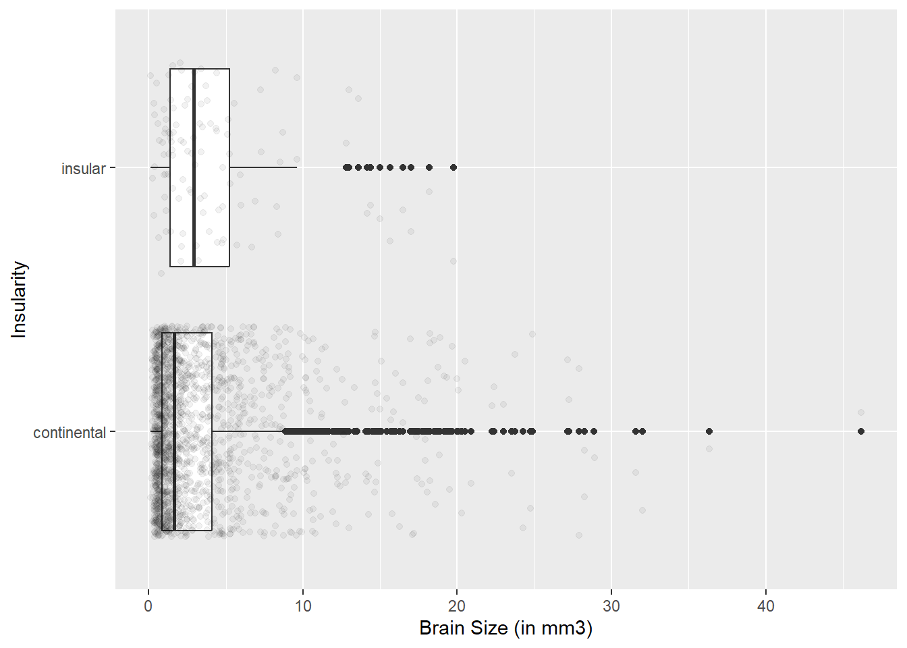
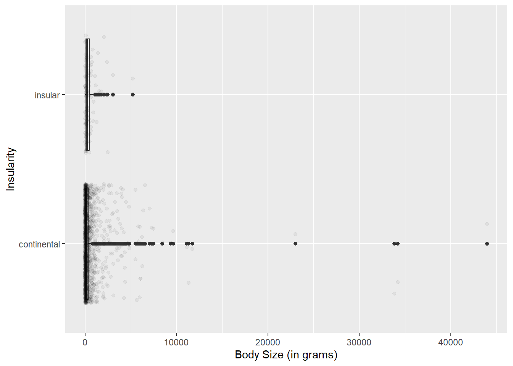
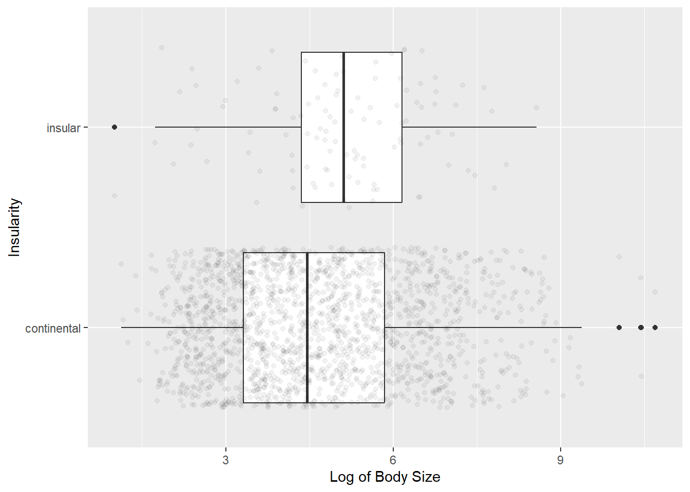
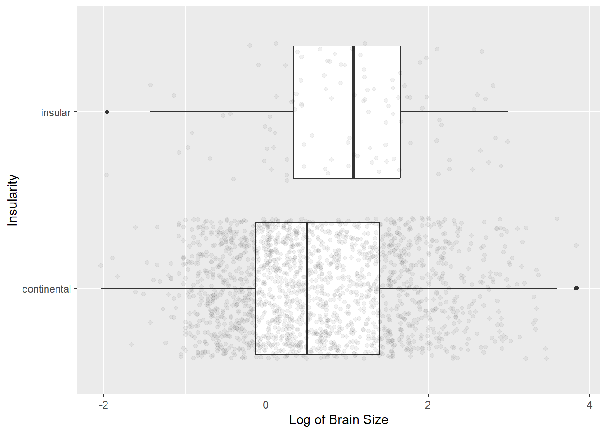
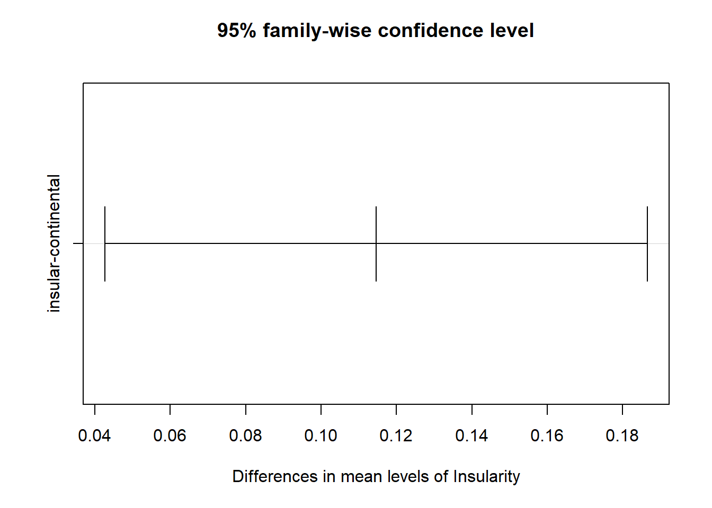
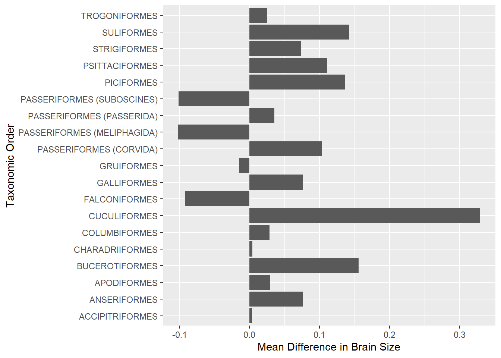

This paper, Predictable Evolution Towards Larger Brains in Birds Colonizing Oceanic Islands, sought to observe whether birds who live on islands have larger brains sizes compared to their continental counterparts, and to explore potential explanatory variables that influence that trend. Written by Ferran Sayol and co., the paper was published in 2018 in Nature Communications. The basis of this paper is that island birds face greater evolutionary pressure than mainland species. This pressure encourages evolutionary changes which confer benefit to adaptability, and is why it is hypothesized islandic birds have larger brain sizes to allow for short-term changes in behaivor. The paper uses data of brain samples from museum collections of bird skulls, of which a total of 11,554 specimens were obtained representing 1,931 different species. The differences were explored using Bayesian Phylogenetic Mixed Models (BPMM) which is a model that stratifies evolutionary patterns by phylogeny. When considering migratory pattern, body size, and developmental mode as factors, the study found significant differences in islandic birds to their mainland counterparts, with island birds having significantly larger brains.
A key limiter in data replication is the nuance and background needed to successfully create, run, and interpret BPMM. This complex model requires a deep understanding of its inputs, as well as the phylogenetics which go in to it. As a liver disease researcher, neither of these are within my perview, however linear mixed models are experiments I can replicate.
##Initial Data Exploration The following section follows the initial data exploration performed to understand the characteristics of the data. The data set contains several data columns, but the variables of interest are taxonomic order, family, brain size, brain residual (phylogeny adjusted difference in brain size), body weight, and insularity (a categorical variable, either Insular (island dwelling) or Continental (mainland dwelling).
f <-"https://raw.githubusercontent.com/TheCoolestPotato/Data-Replication-Assignment/refs/heads/main/41467_2018_5280_MOESM4_ESM.csv"d <-read.csv(f)d <- d |>select(Taxonomic.Order, Family, Insularity, N, Brain..mm3., Body..g., Brain.Residual)skim(d)
Data summary
Name
d
Number of rows
1931
Number of columns
7
_______________________
Column type frequency:
character
3
numeric
4
________________________
Group variables
None
Variable type: character
skim_variable
n_missing
complete_rate
min
max
empty
n_unique
whitespace
Taxonomic.Order
0
1
10
28
0
44
0
Family
0
1
7
17
0
178
0
Insularity
0
1
7
11
0
2
0
Variable type: numeric
skim_variable
n_missing
complete_rate
mean
sd
p0
p25
p50
p75
p100
hist
N
0
1
5.98
3.88
1.00
3.00
6.00
9.00
40.00
▇▃▁▁▁
Brain..mm3.
0
1
3.41
4.38
0.13
0.90
1.70
4.25
46.19
▇▁▁▁▁
Body..g.
0
1
506.68
1866.56
2.75
28.25
91.85
356.75
44000.00
▇▁▁▁▁
Brain.Residual
0
1
0.34
0.37
-0.88
0.09
0.33
0.55
1.54
▁▃▇▃▁
This section runs basic exploratory data visualization across the pertinent variables for the main dataset provided by the publishers. This finds that there are no missing or N/A values in the data set, the collection contains 44 unique taxonomic orders across 178 families, the mean brain size for all observations is 4.38 mm3,and the mean body weight of all observations is 1867 grams.
dist_plot_brain <-ggplot(data = d, aes(x = Brain..mm3., y = Insularity)) +geom_boxplot() +geom_jitter(alpha =0.05) +xlab("Brain Size (in mm3)")dist_plot_body <-ggplot(data = d, aes(x = Body..g., y = Insularity)) +geom_boxplot() +geom_jitter(alpha =0.05) +xlab("Body Size (in grams)")plot(dist_plot_brain)

plot(dist_plot_body)

The original researchers note in the paper that both brain size and body weight required log transformation to improve their distribution. Based on the two plots above, these variables certainly need transforming.
d <- d |>mutate(logbrain =log(Brain..mm3.), logbody =log(Body..g.))d <- (drop_na(d, logbrain))log_brain_dist_plot <-ggplot(data = d, aes(x = logbrain, y = Insularity)) +geom_boxplot() +geom_jitter(alpha =0.05) +xlab("Log of Brain Size")log_body_dist_plot <-ggplot(data = d, aes(x = logbody, y = Insularity)) +geom_boxplot() +geom_jitter(alpha =0.05) +xlab("Log of Body Size")plot(log_body_dist_plot)

plot(log_brain_dist_plot)

A quick log transformation and both variables are looking substantially better. We can conclude that the original authors were correct and certainly better off using log transformed variables for brain and body size.
##Data Replication The primary end point of the study was to observe the difference in brain sizes between island birds and their continental, mainland dwelling counterparts. The authors note that in a model considering body size, migratory pattern, and developmental mode, brains were significantly larger in island birds. This supports the “cognitive buffer hypothesis” which asserts that larger brains are favorable to allow niche expansions and capitalization on variable resource specialization. To this point, they found a CI of 0.028-0.083 for brain size difference with a p-value of <0.001. Their data is using the “Residual” brain values provided in their data. The following section pulls their supplementary data table, and replicates the family-specific mean measurement of brain residuals.
f2 <-"https://raw.githubusercontent.com/TheCoolestPotato/Data-Replication-Assignment/refs/heads/main/41467_2018_5280_MOESM5_ESM.csv"d2 <-read.csv(f2)dgroup <- d |>group_by(Family) |>summarize(meanresidual =mean(Brain.Residual))head(d2)
Looking at the comparison of these two, we can see that the output of our code creates the tibble “dgroup” with a data column “meanresidual” which matches the output of the author’s data column “Relative.Brain.Size..mm3”. This means the brain residual data is indeed what the authors used, and does not require manipulation.
Next, to replicate their data. The first thing I set out to do was to replicate their first figure. Figure 1a, found on the bottom of page 3, contains a box plot of the distributions of relative brain sizes across mainland and islandic birds. Since we know from above that this pull from brain residuals, we can use that to create the boxplots as follows.
Here we can compare the two graphs. The first is figure 1a and 1b from the paper. The second is the figure replicated. While the visualization is different, the two graphs are identical. Both have mean values for both groups at just below 0.5, the mainland/continental groups range from just below -0.5 up to just below 1.25, and the island/insular groups range from just below -0.25 up to greater than 1.5. Next, we can explore the models used and assess their statistical outcome.
d <-read.csv(f)lm1 <-aov(Brain.Residual ~ Insularity, data = d)lm2 <-aov(Brain.Residual ~ Family, data = d)summary(lm1)
Df Sum Sq Mean Sq F value Pr(>F)
Insularity 1 1.36 1.3622 9.762 0.00181 **
Residuals 1929 269.18 0.1395
---
Signif. codes: 0 '***' 0.001 '**' 0.01 '*' 0.05 '.' 0.1 ' ' 1
summary(lm2)
Df Sum Sq Mean Sq F value Pr(>F)
Family 177 231.72 1.3091 59.11 <2e-16 ***
Residuals 1753 38.83 0.0221
---
Signif. codes: 0 '***' 0.001 '**' 0.01 '*' 0.05 '.' 0.1 ' ' 1
First we can observe the effects of insularity and family as predictors of brain size. In the linear models above, we can appreciate that insularity is a predictor for brain size and that the brain sizes between groups differ significantly. Further, certain families like Accipitridae, Charadriidae, and Hydrobatidae have different brain sizes compared to other families. Thus, while we can certainly observe the effects of insularity on brain size we will also need to follow the authors and adjust for phylogenic influence.
lm3 <-lm(data = d, Brain.Residual ~ Migratory.Behavior)lm4 <-aov(Brain.Residual ~ Body..g., data = d)lm5 <-aov(Brain.Residual ~ Developmental.Mode, data = d)summary(lm3)
Call:
lm(formula = Brain.Residual ~ Migratory.Behavior, data = d)
Residuals:
Min 1Q Median 3Q Max
-1.26762 -0.21536 -0.00503 0.21355 1.14723
Coefficients:
Estimate Std. Error t value Pr(>|t|)
(Intercept) 0.21455 0.01527 14.049 <2e-16 ***
Migratory.BehaviorResident 0.17474 0.01822 9.592 <2e-16 ***
---
Signif. codes: 0 '***' 0.001 '**' 0.01 '*' 0.05 '.' 0.1 ' ' 1
Residual standard error: 0.3659 on 1929 degrees of freedom
Multiple R-squared: 0.04553, Adjusted R-squared: 0.04503
F-statistic: 92.01 on 1 and 1929 DF, p-value: < 2.2e-16
summary(lm4)
Df Sum Sq Mean Sq F value Pr(>F)
Body..g. 1 0.61 0.6055 4.327 0.0376 *
Residuals 1929 269.94 0.1399
---
Signif. codes: 0 '***' 0.001 '**' 0.01 '*' 0.05 '.' 0.1 ' ' 1
summary(lm5)
Df Sum Sq Mean Sq F value Pr(>F)
Developmental.Mode 1 50.49 50.49 442.6 <2e-16 ***
Residuals 1929 220.05 0.11
---
Signif. codes: 0 '***' 0.001 '**' 0.01 '*' 0.05 '.' 0.1 ' ' 1
Next we can also look at other potential predictor values. The summaries above show migratory behavior, developmental mode, and to a lesser extent body size, all influence brain size. Thus our ideal model should take all of these into consideration.
posthoc1 <-TukeyHSD(lm1, which ="Insularity", conf.level =0.95)plot(posthoc1)

print(posthoc1)
Tukey multiple comparisons of means
95% family-wise confidence level
Fit: aov(formula = Brain.Residual ~ Insularity, data = d)
$Insularity
diff lwr upr p adj
insular-continental 0.1145938 0.04266301 0.1865245 0.0018082
We can start our modeling with a single level posthoc analysis in which we only observe the effects of insularity. This shows us that indeed brain sizes are significantly different between island and mainland birds, with island birds having the larger brains (CI 95% .0426-.1865, p=0.0018).
Tukey multiple comparisons of means
95% family-wise confidence level
Fit: aov(formula = Brain.Residual ~ Insularity + Family + Insularity:Family, data = d)
$Insularity
diff lwr upr p adj
insular-continental 0.1145938 0.08598728 0.1432002 0
Next we can observe the effect of insularity when factored with family. First, in the summary of the model we can see that insularity and family are independent predictors of brain size when accounting for the other. We do not see, however, that the interaction between these factors being a significant predictor of brain size. This tells us that family does not influence the impact of insularity on brain size. We can then do a posthoc analysis and see that when controlled for family, insularity is a significant predictor of brain size (CI 95% .0859-.01429, p<0.0001).
Tukey multiple comparisons of means
95% family-wise confidence level
Fit: aov(formula = Brain.Residual ~ Insularity + Developmental.Mode + Family + Migratory.Behavior, data = d)
$Insularity
diff lwr upr p adj
insular-continental 0.1145938 0.08626199 0.1429255 0
And finally, taken all together, we can run analysis of a model which takes into account insularity, developmental mode, family, and migratory behavior. We see that each of these variables are predictors of brain size, and posthoc analysis shows when these variables are controlled insularity remains a significant predictor of brain size (CI .08626-.1429, p <0.0001).
Thus, while we are able to come to the same conclusions as the authors, we have a less powerful model compared to what they used. BPMM takes into account phylogenetic progression, and uses the evolutional hierarchy to further explain patterns in evolution. I attempted to recreate at least the analysis of differences observed based on taxonomic order, which are detailed below.
dContinent <- d[d$Insularity =="continental",]dIsland <- d[d$Insularity =="insular",]dIslandBrain <- dIsland |>group_by(Family) |>summarize(meanbrain =mean(Brain.Residual))dContinentBrain <- dContinent |>group_by(Family) |>summarize(meanbrain =mean(Brain.Residual))dgroup <- d |>group_by(Family) |>summarize(meanresidual =mean(Brain.Residual))comm_fams <-intersect(dIslandBrain$Family, dContinentBrain$Family)dIslandBrain <-filter(dIslandBrain, Family %in% comm_fams)dContinentBrain <-filter(dContinentBrain, Family %in% comm_fams)dIslandBrain$difference <- (dIslandBrain$meanbrain - dContinentBrain$meanbrain)list <- d %>%distinct(Family, .keep_all =TRUE)list <-filter(list, Family %in% comm_fams)list <- list |>select(Family, Taxonomic.Order)dIslandBrain <-merge(dIslandBrain, list)taxonomic_diff <- dIslandBrain |>group_by(Taxonomic.Order) |>summarize(meandiff =mean(difference))Tax_Diff_Plot <-ggplot(data = taxonomic_diff, aes(x=meandiff, y=Taxonomic.Order)) +geom_col() +xlab("Mean Difference in Brain Size") +ylab("Taxonomic Order")plot(Tax_Diff_Plot)

To summarize, this section divides the data into two groups, island birds and continental birds. It then winnows the two groups based on only the taxonomic orders the two groups share in common. This is a list of 24 orders. This then combines the two groups, and creates a new data column of the difference between the two groups. We can then create a plot of the mean differences in brain size across taxonomic order. We can compare it to a figure provided by the suppplementary figures.
The graph I developed contains orders not listed in the supplementary figures. In the overlap however, we can see that in the orders the two graphs share in, such as Anseriformes, the mean differences are matched. What my analysis lacks is the confidence intervals which could have only been created with a mixed model.
##Conclusion and Discussion In conclusion, my analysis supports the conclusions the authors came to. When controlling for developmental mode, family, and migratory behavior, island dwelling birds have significantly larger brains compared to their mainland comparators. My analysis was not an exact replication as I did not have the means or knowledge to compile a BPMM. Still, I was able to visualize the same trends the original paper followed. A challenge with this replication was in the lack of clarity in where data was coming from. It took several hours of testing and reading before I was able to deduce that the residuals were the processed values usable for analysis. This led to much distraction and stress in trying to determine how to recreate the BPMM. Further the lack of available code or sources necessary to recreate the BPMM inhibits me from doing a complete replication. This opens a larger discussion of a balance in replicability and specialization in intellectual property. There is an argument that enabling others who lack the specialization to have easy means of completing analysis undervalues the work of the orignal researchers. That is, in this case, were I as basic life science researcher able to easily replicate the work of these folks who have made a profession research this topic raises questions on the role of a researcher. In a similar way if wet lab research were so easily automated that it could be done without much training or knowledge, what reason would I have to pursue my field of research? Still, science is a field of growing the wealth of knowledge humanity shares, and we should strive to create knowledge to share knowledge. I was able to reach the same conclusions as the authors while not being able to come to the exact same numbers, which stands to reason as someone for whom this is not my specialty.